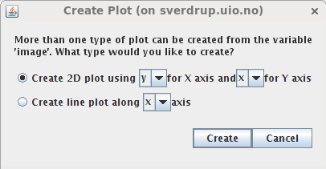
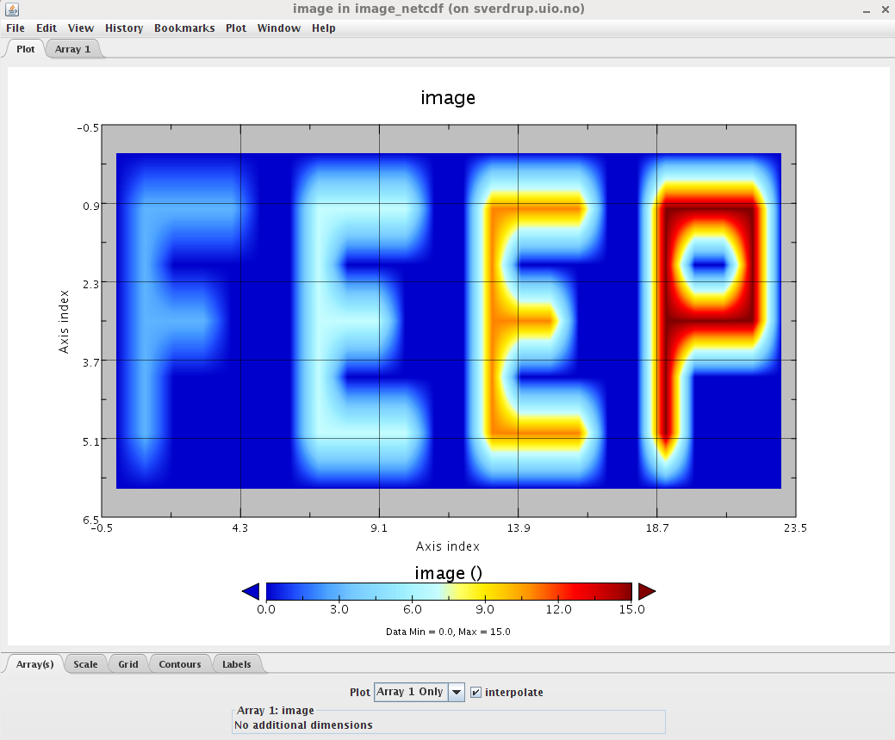
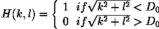
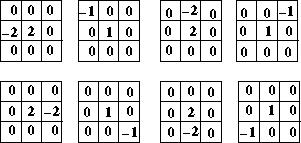

This note describes the project assignment for GEO4060 course. Although the project is inspired by needs in
mathematical computations, and the text contains some (simple) mathematics, there is no need for a thorough understanding of concepts
like matrices and vectors to do the project.
The goal is to work together as a team on the development of a simple numerical analysis and data processing library.
GEO4060 Project Assignment 2016
A simple numerical analysis and data processing library
There are some requirements on tools and packaging of this project:
The project must use the same GitHub code repository (it will be setup at https://github.uio.no/ during the course), and all codes must be regularly committed. Use a git branch rather than keeping code completely out of the repository.
The project must be fully automatically buildable, runnable, and testable on a generic linux desktop, using the GNU Fortran >= 5.2.0 compiler.
Data formats
The goal of this data processing library is to manipulate different data file format and be able to apply the same processing whatever the format used. As a first attempt, we will consider the following data formats:
PGMA and PGMB are variant from the PGM data format. We first introduce PGM format:
PGM stands for "Portable Gray Map" and is a simple grayscale file format.
A PGM file consists of a sequence of one or more PGM images. There are no data, delimiters, or padding before, after, or between images.
One PGM image must contain:
A "magic number" for identifying the file type. A pgm image's magic number is the two characters "P5", "P2" (it depends on the type of PGM file).
Whitespace (blanks, TABs, CRs, LFs).
A width, formatted as ASCII characters in decimal.
Whitespace.
A height, again in ASCII decimal.
Whitespace.
The maximum gray value (Maxval), again in ASCII decimal. Must be less than 65536, and more than zero.
A single whitespace character (usually a newline).
A raster of Height rows, in order from top to bottom. Each row consists of Width gray values, in order from left to right. Each gray value is a number from 0 through Maxval, with 0 being black and Maxval being white. Each gray value is represented in pure binary by either 1 or 2 bytes. If the Maxval is less than 256, it is 1 byte. Otherwise, it is 2 bytes. The most significant byte is first.
PGMA
PGMA is the ASCII (American Standard Code for Information Interchange) form of the portable gray map PGM format. A PGMA file is therefore a text file (human readable!).
The magic number of PGMA files is "P2".
As it is a text format, you can edit, read file content with any editor (sublime, nano, emacs, vim, etc.). Here is a simple example:
PGMB stands for "Portable Gray Map Binary" and is the binary form of the portable gray map PGM format.
The magic number of PGMB files is "P5". As it is a binary format, you need a "program" to manipulate these data files.
PPM
PPM stands for "Portable PixMap" and is very similar to PGM format except that one pixel is represented by 3 integers values and is therefore capable of handling colour component using the RGB colour model (Red,Green,Blue).
A PPM file consists of two parts, a header and the image data. The header consists of at least three parts normally delineated by carriage returns and/or linefeeds but the PPM specification only requires white space. The first "line" is a magic PPM identifier, it can be "P3" or "P6" (not including the double quotes!). The next line consists of the width and height of the image as ASCII numbers. The last part of the header gives the maximum value of the colour components for the pixels, this allows the format to describe more than single byte (0..255) colour values. In addition to the above required lines, a comment can be placed anywhere with a "#" character, the comment extends to the end of the line.
Here is an example of PPM header:
P3
1024 # the image width
788 # the image height
# A comment
1023
PPMA
PPMA data format is the ASCII version of the PPM format.
The magic number of PPMA files is "P3" and the numerical value of each pixel ranges from 0 to the maximum value given in the header. The lines should not be longer than 70 characters.
Here is an example of PPMA image:
PPMB stands for "Portable PixMap" binary format.
The magic number of PPMB files is "P6" and the image data is stored in byte format, one byte per colour component (r,g,b).
Comments can only occur before the last field of the header and only one byte may appear after the last header field, normally a carriage return or line feed. "P6" image files are obviously smaller than "P3" and much faster to read. Note that "P6" PPM files can only be used for single byte colours.
While not required by the format specification it is a standard convention to store the image in top to bottom, left to right order. Each pixel is stored as a byte, value 0 == black, value 255 == white. The components are stored in the "usual" order, red - green - blue.
PBM
PBM stands for Portable BitMap and stores single bit pixel image as a series of ASCII "0" or "1"'s. Traditionally "0" refers to white while "1" refers to black. The header is identical to PPM and PGM format except there is no third header line (the maximum pixel value doesn't have any meaning!).
The magic identifier for PBM is "P1".
Here is an example of a small bitmap in this format, as with PPM files there can be no more than 70 characters per line.
NetCDF is a self-describing, machine-independent binary data formats that support the creation, access, and sharing of array-oriented scientific data.
In the simple view, netCDF is a:
Data model
File format
Application programming interface (API)
Library implementing the API
Together the data model, file format, and APIs support the creation, access, and sharing of scientific data.
NetCDF was developed and is maintained at Unidata.
As it is a binary data format, we cannot read netCDF files with a simple editor and we need to write programs. Hopefully, Unidata provides users with a set of libraries and program utilities to read/write and manipulate netCDF data file. netCDF software library and utilities are available on all the Linux computers of the Department of Geosciences.
The goal here is not to give you an extensive description of netCDF format and associated utilities but just to give you what is required for this project. If you wish to learn more about netCDF, visit Unidata website and netCDF user documentation.
CDL
We will first use CDL (Common Data form Language) a human-readable text representation of netCDF data.
CDL files are ASCII file written using the CDL Syntax. For our project, we aim at using CDL to describe images, i.e. 2 dimensional arrays. A CDL file is made of 3 sections:
dimensions: in this section, the dimensions of your image is defined. You can give any "names" to your dimensions (x=3, dim1=3, etc.)
variables: the list of variables with their types, and dimensions is provided
data: in this section, the values for each variable is given. Values must be comma separated.
The 3 sections are encapsulated within a netCDF "section" identified by curly brackets. After "netcdf" keyword, the name of the netCDF section must be given.
Here is an example of CDL file:
netcdf simple_img {
dimensions:
x = 7 ;
y = 24 ;
variables:
int image(x, y) ;
data:
image =
0,0,0,0,0,0,0,0,0,0,0,0,0,0,0,0,0,0,0,0,0,0,0,0,
0,3,3,3,3,0,0,7,7,7,7,0,0,11,11,11,11,0,0,15,15,15,15,0,
0,3,0,0,0,0,0,7,0,0,0,0,0,11,0,0,0,0,0,15,0,0,15,0,
0,3,3,3,0,0,0,7,7,7,0,0,0,11,11,11,0,0,0,15,15,15,15,0,
0,3,0,0,0,0,0,7,0,0,0,0,0,11,0,0,0,0,0,15,0,0,0,0,
0,3,0,0,0,0,0,7,7,7,7,0,0,11,11,11,11,0,0,15,0,0,0,0,
0,0,0,0,0,0,0,0,0,0,0,0,0,0,0,0,0,0,0,0,0,0,0,0 ;
}
This example specifies a netCDF dataset with two dimensions (x and y), one variable (image), and some data values for the variable.
This example has only one variable, but multiple variables may be included in a netCDF file.
CDL comments follow "//" symbols. They are not part of netCDF data.
You can use the ncgen utility to generate a binary netCDF file from CDL and then utilities such as ncview or Panoply to visualize your netCDF file:
ncgen simple_img.cdl
A new output file called simple_img.nc will be generated.
To visualize it (on sverdrup):
module load panoply
panoply.sh simple_img.nc
Once panoply is up and running, choose your variable (called image in our example) and click on "Create Plot". Choose how you wish to plot your variable:

Panoply Create Plot

Plot of a netCDF image with panoply
Remarque: Panoply is a simple tool that can be installed on various platform (Windows, Mac OSX, Linux) and is therefore very portable.
netCDF
Here we refer to the binary netCDF format. To create or read netCDF files, we can use the Unidata netCDF library. A Fortran 90 API (Application Program Interface) is available as part of the netCDF libraries and provides users with an easy way to interact with netCDF within a Fortran program. The source code corresponding to the Fortran 90 netCDF interface is available on github (https://github.com/Unidata/netcdf-fortran).
The netCDF Fortran API contains an exhaustive list of routine you can use to manipulate netCDF. Here we only show simple example to create and read netCDF files and how to compile these Fortran codes.
Many netCDF examples can be found at http://www.unidata.ucar.edu/software/netcdf/examples/programs/. The two programs we wish to use (and modify to include them in our library) are:
Fortran 90: simple_xy_wr.f90: to write a 2D variable in a netCDF file
Frequency filters process an image in the frequency domain.
The image is Fourier transformed, multiplied with the filter function and then re-transformed into the spatial domain.
The operator usually takes an image and a filter function in the Fourier domain. This image is then multiplied with the filter function
in a pixel-by-pixel fashion:
G(i,j) = F(i,j) H(i,j)
where F(i,j) is the input image in the Fourier domain (obtained after applying a Fourier transform to the original image),
H(i,j) the filter function and G(i,j) is the filtered image.
To obtain the resulting image in the spatial domain, G(i,j) has to be re-transformed using the inverse Fourier Transform.
Fourier transforms
For this project, we will be using an existing library called FFTW 3. The FFTW software library
consists of pre-written code and subroutines for computing the Fourier transform in one or more dimensions, of arbitrary
input size, and of both real and complex data (as well as of even/odd data, i.e. the discrete cosine/sine transforms or DCT/DST).
FFTW is a free software library and was developed at MIT by Matteo Frigo and Steven G. Johnson. It is written in
C language and is very portable (can be installed on every computer
where a C compiler is available). It provides users with both C and
Fortran interfaces.
FFTW 3 is available on sverdrup and can be installed anywhere (see download page). To set up
your environment on sverdrup:
module load fftw/3.3.4
Then you can use the environment variable FFTW_HOME for compiling (see example below).
If you wish to install FFTW on your machine or laptop, make sure you install/use FFTW3 (FFTW 2.1.5 is obsolete).
FFTW is designed to be used in the following way:
Create a plan.
Use the plan to perform FFTs
Destroy the plan
For our project, the Fortran
interface will be used and we are interested in applying DFT on 2D arrays (images).
Examples can be found here.
"2d" means FFTW will be applied on a 2D array and "r2c" means real to complex (use c2r when your input array is a complex and your outputarray a real).
To compile and link your Fortran program with FFTW on sverdrup:
# Set uo your environment
module load fftw/3.3.4
# Compile and link
gfortran -o fftw3_example.exe fftw3_example.f90 -I$FFTW_HOME/include -L$FFTW_HOME/lib -lfftw3
# Execute your program
./fftw3_example.exe
The full documentation for this package can be found here. You can also consult the FAQ.
Filter functions
The form of the filter function (H) determines the effects of the operator. There are basically three different kinds of filters:
low-pass filters
high-pass filters
band-pass filters
Low-pass Filters
A low-pass filter attenuates high frequencies and retains low frequencies unchanged. The result in the spatial domain is equivalent
to that of a smoothing filter; as the blocked high frequencies correspond to sharp intensity changes, i.e. to the fine-scale
details and noise in the spatial domain image.
The most simple lowpass filter is the ideal lowpass. It suppresses all frequencies higher than the cut-off frequency D0 and
leaves smaller frequencies unchanged:

High-pass Filters
A high-pass filter, on the other hand, yields edge enhancement or edge detection in the spatial domain, because edges contain
many high frequencies. Areas of rather constant graylevel consist of mainly low frequencies and are therefore suppressed.
We obtain a highpass filter function by inverting the corresponding lowpass filter, e.g.
an ideal highpass filter blocks all frequencies smaller than D0 and leaves the others unchanged.
Band-pass Filters
A band-pass attenuates very low and very high frequencies, but retains a middle range band of frequencies.
Band-pass filtering can be used to enhance edges (suppressing low frequencies) while reducing the noise at the same time
(attenuating high frequencies).
They attenuate all frequencies smaller than a frequency D0 and higher than a frequency D1, while the frequencies
between the two cut-offs remain in the resulting output image.
We obtain the filter function of a bandpass by multiplying the filter functions of a lowpass and of a highpass in the
frequency domain, where the cut-off frequency of the lowpass is higher than that of the highpass.
Instead of using one of the standard filter functions, you can also create your own filter mask, thus enhancing or
suppressing only certain frequencies. In this way you could, for example, remove periodic patterns with a certain direction
in the resulting spatial domain image.
Performance analysis: timing your application
It is important to be able to time your application and have a detailed overview of the performance of your code.
For this, you will implement a Fortran module containing routines to time each subroutine/functions of your tools. We wish to have a standardized outputs such as:
Copyright (C) 2016, UIO
Process CPU Time (s) | Process Elapsed Time (s)
=====================|==========================
0.030 | 0.030
=====================|==========================
Started on 04/03/2015 at 21:10:18 MET +01:00 from GMT
Stopped on 04/03/2015 at 21:10:18 MET +01:00 from GMT
CPU time is the time for which the CPU was busy executing the task. It does not take into account the time spent in waiting for I/O (disk IO or network IO). Since I/O operations, such as reading files from disk, are performed by the OS, these operations may involve noticeable amount of time in waiting for I/O subsystems to complete their operations. This waiting time will be included in the elapsed time, but not CPU time. Hence CPU time is usually less than the elapsed time.
To measure the CPU time of your code, you can use CPU_TIME Fortran intrinsic subroutine:
When running a code in "production" i.e. to get scientific results (not during the development phase), you would like to
disable these timings as they may slow down your code.
For this you can for instance define a logical called USE_TIMING which call timing routines when true; for instance:
LOGICAL :: USE_TIMING
...
if (USE_TIMING) call timeAppInit()
...
if (USE_TIMING) call timeAppEnd()
The value of USE_TIMING will be an input parameter of your tool (value chosen by users).
Work to do
Read/Write methods
Define a Fortran 2003 module and associated methods (subroutines/functions) to read and write the various data formats
(PGMA, PGMB, PPMA, PPMB, PBM, CDL, netCDF)
Create a sample program to test all these methods
Convert formats
We wish to be able to convert an image/file from one format to another.
Write all the necessary methods to do so
Create s sample program to test all these methods
Size reduction or sub-area
Write 2 different methods to reduce by a factor F the size of an image:
method-1:keep the pixel (i,j) of an image if modulo(i,F) and modulo(j,F) are both null.
method-2:compute the average over a box FxF. For instance if F=3, compute the average over a 3x3 box:

Write a method to select a sub-area of an image: user gives the origin (x0,y0) and the number of point to select in x and y
Write a program to test all these methods and make sure the user can select which method to test
Timing methods
Write a module with methods for timing your applications using the framework detailed previously.
Write a program to test all the methods of your module
Fortran 2003 data structures (class)
Depending on how you previously defined your data structures, it may or may not be Fortran 2003 (classes) yet. Here the goal is to
define Fortran 2003 classes for all the different data formats.
The final library
Write a final main program where the user:
can pass the name of a file (any data format)
can choose which method to apply on this image (convert to another format, filter, reduce, etc.)
can choose the output format of the resulting image as well as its filename
can choose to get a log file containing information on the run (which methods were called, time spent in each subroutine, etc.).
It means a silent mode (no log file) must be provided too.
The final time of delivery
The final time of delivery is Friday 27.05.2016 at 23:59